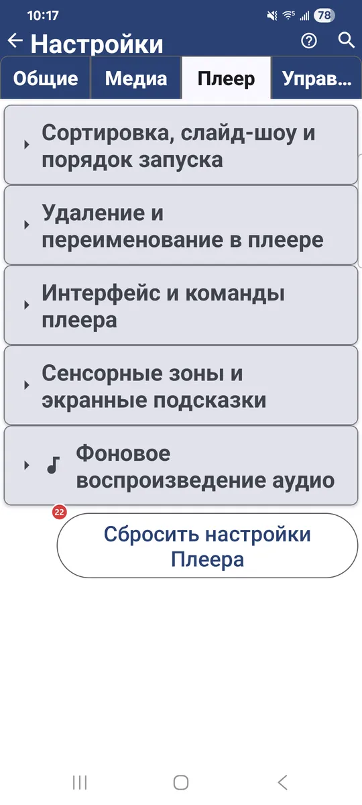
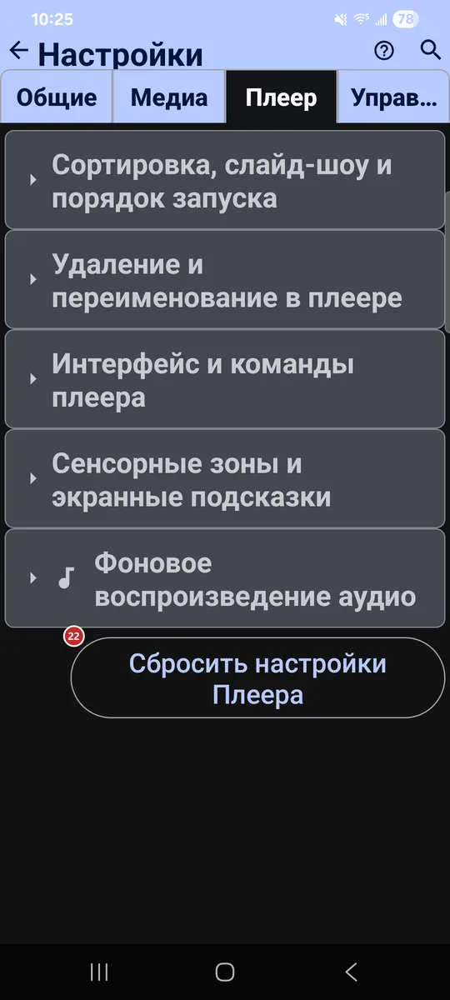

Настройки: Плеер
Для чего этот экран
На вкладке «Плеер» собраны настройки просмотра и воспроизведения файлов: порядок по умолчанию, время слайд-шоу, что можно делать с файлом во время просмотра, управление плеером, сенсорные зоны и фоновое аудио.


Порядок действий
Единого порядка здесь нет - каждый параметр работает сам по себе. Ниже они сгруппированы по тем же заголовкам разделов, что и на вкладке.
Элементы
Сортировка, слайд-шоу и порядок запуска
1Режим сортировки по умолчаниюЗадаёт порядок файлов по умолчанию.
Можно выбрать ручной порядок или сортировку по имени, дате, размеру и типу - по возрастанию или по убыванию.
2Слайд-шоу (с)Задаёт, сколько секунд каждое изображение остаётся на экране в слайд-шоу.
От 1 до 3600 секунд, по умолчанию 10. Видео играет до конца или подчиняется этому таймеру - это зависит от следующего параметра.
3Проигрывать видео/аудио в слайд-шоу до концаДаёт видео и аудио в слайд-шоу доиграть до конца.
Без этого параметра к следующему файлу переходят по интервалу слайд-шоу.
Удаление и переименование в плеере
4Разрешить переименованиеРазрешает переименовывать файл прямо в плеере.
Удобно при разборе файлов: переименуйте текущий файл, не возвращаясь в браузер файлов.
5Разрешить удалениеРазрешает удалять файл прямо в плеере.
Удобно при разборе файлов: удалите текущий файл, не возвращаясь в браузер файлов.
- Отмена
- На локальных ресурсах удалённый файл ждёт в скрытой папке .trash, и его можно вернуть кнопкой «Отменить», пока ресурс не закрыт. На некоторых сетевых и облачных ресурсах удаление необратимо.
6Подтверждать удалениеСпрашивает подтверждение перед удалением файла в плеере.
Выключите, если предпочитаете удалять одним нажатием.
Интерфейс и команды плеера
7Прятать элементы ОС в полноэкранном режимеСкрывает строку состояния и навигацию в полноэкранном режиме.
Изображению достаётся весь экран.
8Поворачивать экран плеера вслед за ОСПоворачивает экран плеера вслед за автоповоротом системы.
Работает независимо от общей настройки приложения, поэтому остальное приложение остаётся как было.
9Показывать панель команд по умолчаниюАвтоматически открывает панель команд при входе в плеер.
Панель даёт быстрый доступ к копированию, перемещению, удалению и другим действиям с файлом.
10Автоскрытие панели плеера (сек)Задаёт, через сколько секунд панель плеера скрывается.
Меньшее значение быстрее освобождает экран, большее дольше оставляет кнопки под рукой.
11Показывать кнопку «Чёрный экран»Добавляет кнопку, которая гасит экран, пока воспроизведение продолжается.
Кнопка находится на панели плеера: экран темнеет, а аудио или видео играет дальше.
12Включить картинку в картинкеДобавляет в плеер кнопку «картинка в картинке».
Плеер также сам переходит в режим «картинка в картинке», когда вы нажимаете «Домой» (Android 12 и новее).
13Режим большие кнопкиУвеличивает кнопки плеера и растягивает их на всю ширину.
Режим подходит для автомагнитол. Вверху помещается от 5 до 9 кнопок, в зависимости от ширины, остальные уходят в меню с тремя точками. В альбомной ориентации высокая нижняя панель может уменьшить область воспроизведения.
14Компактные кнопки плеераУменьшает нижние кнопки управления в плеере.
Полезно на небольших экранах или когда хочется менее заметного интерфейса.
Сенсорные зоны и экранные подсказки
15Отключить отслеживание 9 зонПереключает плеер с 9 сенсорных зон на 3.
Когда сетка из 9 зон выключена, в плеере три зоны: предыдущий, масштаб и следующий. Нажмите левый край, чтобы открыть панель команд с действиями над файлом.
16Показывать подсказку сенсорных зон при первом запускеПоказывает подсказку о сенсорных зонах при первом открытии плеера.
Схема объясняет девять зон: назад, копировать, переименовать, предыдущий, переместить, следующий, панель команд, удалить и слайд-шоу.
17Всегда показывать сетку сенсорных зонДержит поверх медиа полупрозрачную сетку сенсорных зон.
Она видна в полноэкранном режиме и помогает запомнить, какая зона что делает.
18Показать подсказку в следующий разПокажет подсказку о сенсорных зонах при следующем открытии плеера.
Нажмите, чтобы увидеть схему ещё раз.
Фоновое воспроизведение аудио
19Фоновое воспроизведениеНе прерывает звук, когда приложение свёрнуто.
Музыка продолжает играть в фоне. Если уведомления заблокированы, здесь появляется кнопка для управления этим разрешением.
20Поведение при выходе из плеера и трансляцийВыбирает, что будет с фоновым звуком, когда вы выходите из плеера или трансляций.
По умолчанию приложение спрашивает каждый раз. Можно также всегда останавливать звук или всегда продолжать воспроизведение. Выбор появляется, когда включено фоновое воспроизведение.
21Показывать панель плеераПоказывает мини-плеер, пока вы просматриваете изображения и другие файлы.
Панель позволяет управлять играющим треком и возвращает в полный аудиоплеер.
Сброс
22Сбросить настройки ПлеераВозвращает к значениям по умолчанию только эту вкладку.
Настройки на других вкладках сохраняются. Перед сбросом приложение просит подтвердить действие.